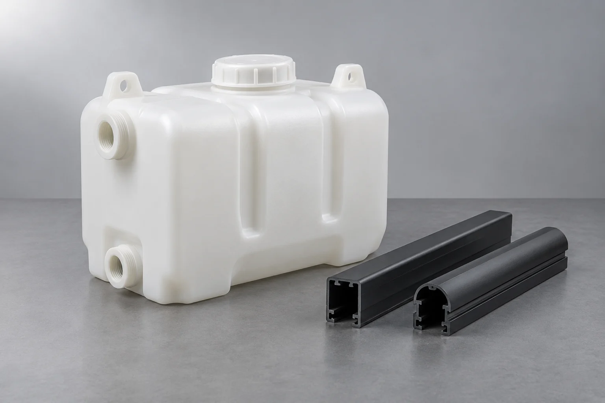

Find your material.
From everyday polyolefins to engineering resins. Start with a family, then explore the details.

HDPE
High-density polyethylene
Industrial drums and containers · Coiled pipe and fittings · Storage boxes and organizers

LDPE
Low-density polyethylene
Flexible bags and liners · Flexible packaging pouches · Greenhouse and agricultural films

LLDPE
Linear low-density polyethylene
Flexible bags and liners · Pallet stretch wrap · Flexible packaging pouches

MDPE
Medium-density polyethylene
Coiled pipe and fittings

mPE
Metallocene polyethylene
Pallet stretch wrap · Flexible packaging pouches · Greenhouse and agricultural films

PP-H
PP homopolymer
Molded cylindrical housing · Circular trim — front · Circular trim — rear

PP-R
PP random copolymer
Plumbing pipe and fittings

PP-I
PP impact copolymer
Automotive molded panel · Automotive bumper and grille · Automotive interior

GPPS
General-purpose polystyrene
Clear rigid display boxes

HIPS
High-impact polystyrene
Refrigerator liners and trays

ABS
ABS resin sourcing
Automotive molded panel · Automotive bumper and grille · Automotive interior

PE-C
PE compounds
Molded tanks and extrusion profiles

PP-C
PP compounds
Automotive molded panel · Automotive bumper and grille · Molded mounting components

ABS-C
ABS compounds
Vented industrial housing · Circular trim — front · Circular trim — rear

PC-C
PC compounds
EV charging station · Electrical enclosure · Electrical enclosure covers

PS-C
PS compounds
Formed component transport trays

XLPE-C
Cross-linkable PE compounds
Cable insulation

TPE-C
Thermoplastic elastomer compounds
Flexible grips, bellows and seals

PVC
PVC resin
Window and building profiles

PVC-P
PVC paste resin
Coated fabric and synthetic leather

PET
Polyethylene terephthalate
Bottles and preforms

PCR
Post-consumer recycled resins
Recycled feedstock and molded samples

BIO
Bioplastics & bioplastic compounds
Biobased material samples

RENEW
Renewable-feedstock polymers
Renewable feedstock and polymer samples

PA6
Nylon 6
Molded mounting components · Molded support bracket · Black mounting bracket

PA66
Nylon 66
EV charging station · Molded mounting components · Molded support bracket

PC
Polycarbonate
EV charging station · Optical device housing · Wearable device housing

PC-ABS
PC/ABS alloy
Automotive molded panel · Automotive interior · EV charging station
No matching materials.
Try a broader filter or ask CycleVance about your requirement.
Portfolio references describe material families, not confirmed stock. Brand, producer, grade and availability are verified in your quotation.
What are you making next?
Start with your application. We’ll help define the material conversation.
Talk to CycleVance